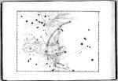

Johann Bayer, Uranometria, omnium asterismorum continens schemata, nova methodo delineata, aereis laminis expressa. [Augustae Vindelicorum, excudit Christophorus Mangus, tabulas in aes incidit Alexander Mair, 1603.] -- (Museum Boerhaave)
Toen de Augsburgse theoloog en astronoom Johann Bayer (1572-1625) in 1603 zijn Uranometria (Hemelmeting) publiceerde, had hij zich tevoren goed op de hoogte gesteld van het werk van zijn voorgangers en van zijn tijdgenoten. Voor de eerste achtenveertig van de eenenvijftig kaarten in zijn atlas, die door Alexander Mair gegraveerd waren, had hij zich onder meer gebaseerd op de sterrencatalogi van Ptolemaeus(!), maar ook op die in de één jaar eerder verschenen Progymnasmata van de Deense astronoom Tycho Brahe.
Niet alleen was Bayers atlas de eerste complete sterrenatlas (dus met kaarten van zowel het noordelijk als het zuidelijk halfrond), die tot in de negentiende eeuw zijn diensten zou bewijzen, maar hij bevatte ook enige opvallende nieuwigheden. Bayer ontwikkelde een praktisch bruikbaar naamgevingssysteem door elke ster binnen een bepaald sterrenbeeld aan te geven met een Griekse letter, bij voorbeeld a Cygni. Verder is kaart 49 de eerste kaart die de sterrenhemel van het zuidelijk halfrond afbeeldt. Bayer ontleende zijn gegevens aan een hemelglobe van Jodocus Hondius in Amsterdam, hetzij in de uitgave van 1600, hetzij in die van 1601. Hondius op zijn beurt had deze gegevens via Petrus Plancius gekregen van Frederick de Houtman, een van de deelnemers aan de eerste ‘schipvaart naar Indië’ van 1595 tot 1597.
Uit Bayers atlas wordt de afbeelding van het sterrenbeeld Andromeda getoond. Opvallend is het verschil in kwaliteit en stijl met de slechts vier jaar eerder gepubliceerde verbeelding door Jacob de Gheyn (zie nummer 61), waarbij we ons dan ook nog moeten realiseren, dat deze sterk door zijn voorbeeld uit het Aratea-handschrift in zijn artistieke bewegingsvrijheid was beperkt.
Literatuur
- N.M. Swerdlow, ‘A star catalogue used by Johannes Bayer’, in: Journal for the history of astronomy, 17 (1986), p. 189-197.
- E. Dekker, ‘On the dispersal of knowledge of the southern celestial sky’, in: Der Globusfreund, 35-37 (1987), p. 211-230.
| vorige pagina | top pagina |